摄影
精选 37 个相关案例
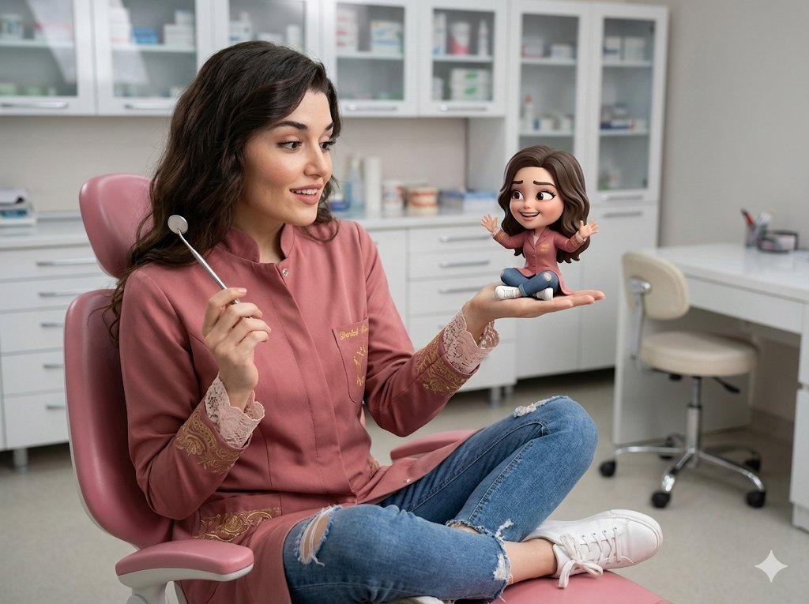
案例589: 办公室里的真实人与3D迷你立绘对比与互动
真人与同场景的3D迷你模型并列呈现，强调皮肤质感、毛孔细节、表情与互动动作，营造真实又带幽默的现代办公室氛围。
🎨 查看AI提示词
🇨🇳 中文提示词
纳米香蕉专业提示： 我和我的小 3D 立绘在办公室 成人人物的超现实主义电影肖像，面部完全可见，自然的人类皮肤纹理带有毛孔和细微瑕疵，以及逼真的发丝。真人坐在粉色牙科诊所的牙科椅上，手持一个小的 3D 微型模型，优雅地坐在一只手的手掌上，双腿交叉，姿态放松。4:3 横向比例。穿着牙科诊所服装，带有玫瑰色外套，手持牙科镜。 真人看着微型模型，表现出明显的惊讶和轻微的愉悦，眉毛上扬，微笑...
🇬🇧 English Prompt
Nano banana pro prompt: ME AND MY LITTLE 3D CHIBI IN THE OFFICE Ultra-realistic cinematic portrait of an adult person, with the face fully visible, natural human skin texture with pores and subtle...
案例588: 超写实火水元素平衡电影肖像生成指南與要点
描述一个面向镜头、左为火、右为水的对称超写实肖像，强调暖橙与冷蓝的强烈对比，以及电影级灯光、质感与超细纹理。
🎨 查看AI提示词
🇨🇳 中文提示词
{ "目标": "创作一幅超写实的电影肖像，表达火与水之间史诗般的平衡", "人物细节": { "主题": { "类型": "年轻女性", "姿态": "面向前方，位于画面中央", "表情": "平静、专注、有力" "凝视": "与相机直接对视", "头发": { "发型": "湿发，向后梳拢", "细节": { "FireSide...
🇬🇧 English Prompt
Gemini Nano Banana pro image generation Prompt:{ "Objective": "Create a hyper-realistic cinematic portrait expressing an epic balance between fire and water", "PersonaDetails": { "Subject...
案例586: 超新鲜柑橘汽水微距系列高端广告级成像与流体动力学
通过4:5竖屏超清微距呈现柑橘汽水的碳化与折射质感，打造高端饮品广告级成像。覆盖多场景光影与动态水花，提升商业视觉传播效果。
🎨 查看AI提示词
🇨🇳 中文提示词
"标题": "超新鲜柑橘汽水微距系列" "版本": "2.0_流体动力学_高速", "目标美学": "高端饮料商业广告" }, "技术基础": { "相机硬件": { "机身": "Phase One XF IQ4 150MP", "镜头": "Schneider Kreuznach 120mm LS f/4.0 Macro", "设置": "超高速快门（1/8000s 定格）...
🇬🇧 English Prompt
"project": { "title": "Hyper-Fresh Citrus & Soda Macro Series", "version": "2.0_Liquid_Dynamics_High_Speed", "target_aesthetic": "High-end Beverage Commercial Advertising" }, "tec...
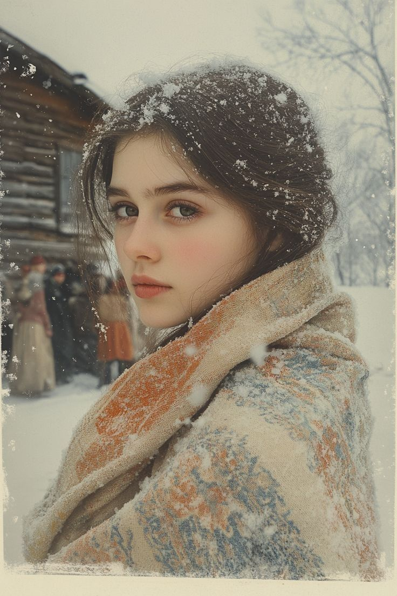
案例585: 冬日乡村肖像：披肩雪花少女的凝视与温柔静默光影
冬日乡村静谧场景中，年轻女性回眸凝视，披肩雪花点缀，呈现自然质感与温暖对比。画面采用柔和漫射光与浅景深，呈现电影质感。
🎨 查看AI提示词
🇨🇳 中文提示词
Gemini Nano Banana Pro. 提示: { "主题": { "描述": "年轻女性，大约十几岁或二十出头" "姿态": "从肩后回望观众，身体微微侧转", "表情": "平静、中性、略带忧郁、直视" }, "面部": { "肤色": "白皙，自然肌理，脸颊和鼻子有明显的玫瑰色（冷潮红）", "眼睛": "大而清晰的黄绿色眼睛，焦点锐利，长睫毛", "...
🇬🇧 English Prompt
Gemini Nano Banana Pro. Prompt: { "subject": { "description": "Young woman, approximately late teens or early 20s", "pose": "Looking back over her shoulder at the viewer, body turned sli...
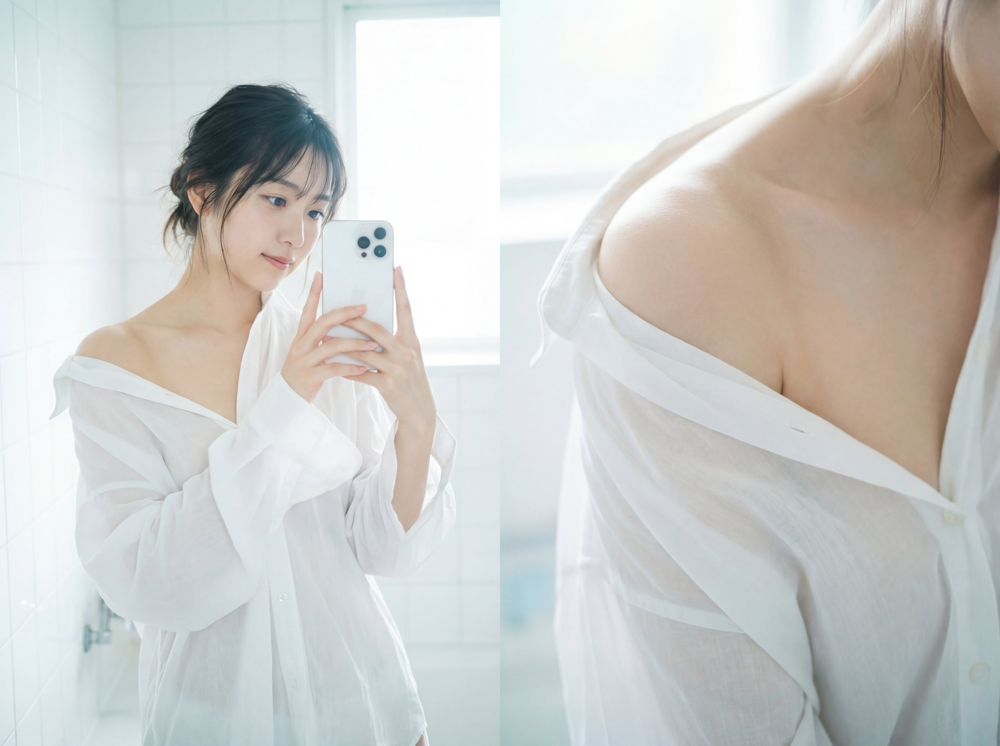
案例583: 今日自拍拼贴：胶片风格双联画的空灵晨光私照
呈现两联拼贴的空灵胶片风格自拍，左图镜面自拍，右图近景肩颈细节，光影柔和、颗粒感明显，营造安静亲密的晨间氛围。
🎨 查看AI提示词
🇨🇳 中文提示词
{ "prompt_configuration": { "风格预设": "林浩川电影美学" "媒体类型": "模拟胶片摄影双联画 (两联拼贴)" "整体氛围": "空灵，梦幻，轻盈，静谧的亲密，纯粹性感，过度曝光" } "全局技术参数": { "胶片类型": "中画幅，富士 Pro 400H 模拟", "胶片特性": "厚重自然颗粒感，柔和光晕，去饱和柔和粉彩色...
🇬🇧 English Prompt
{ "prompt_configuration": { "style_preset": "Rinko Kawauchi Film Aesthetic", "media_type": "Analog Film Photography Diptych (Two-panel collage)", "overall_mood": "Ethereal, dreamy, a...
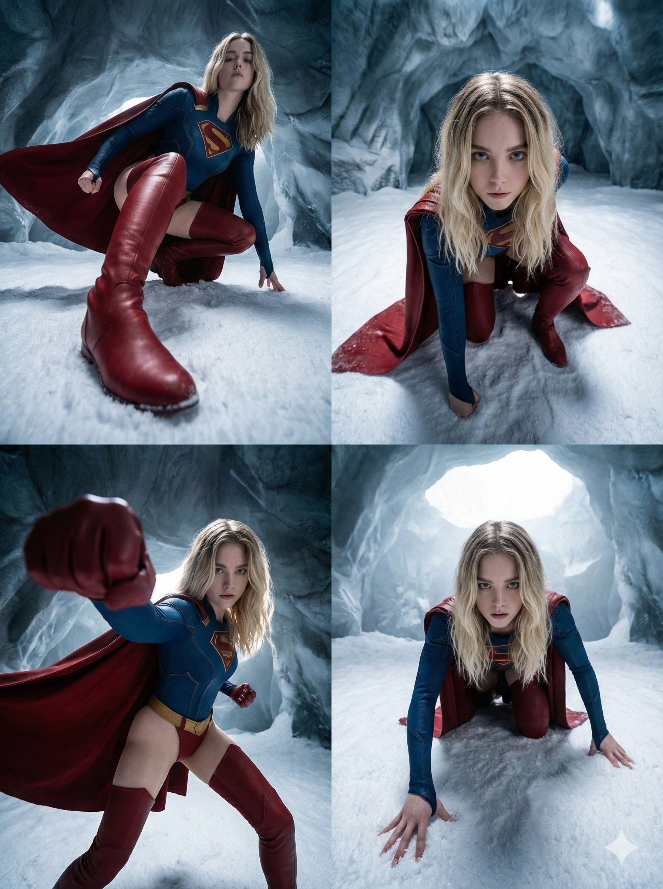
案例582: 将原始照片转换为四种戏剧化高对比风格的图像
将原始照片转化为四种戏剧化风格，采用极端广角与动态角度，呈现电影级灯光、高清对比与细腻纹理的超真实画面。
🎨 查看AI提示词
🇨🇳 中文提示词
Gemini 3.0 Nano Banana Pro 将原始照片转化为戏剧化、照片级真实感、超精细的 4 种不同风格，人物包含在内，每个都是中近景、广角拍摄，带有极端、动态的相机角度（包括更多从正下方或正上方直接拍摄的网格视图），其中一到多个身体部位紧贴镜头显得巨大，其余身体部分强烈地退入透视中，同一个人在原始环境的扩展版本中摆出时尚、复杂、有力的姿势，具有电影级灯光、高对比度、清晰的纹理和...
🇬🇧 English Prompt
SUPER GIRL Gemini 3.0 Nano Banana Pro Transform the original photo into a dramatic, photorealistic, ultra-detailed set of 4 different styles characters are included , each a mid close up wide-a...
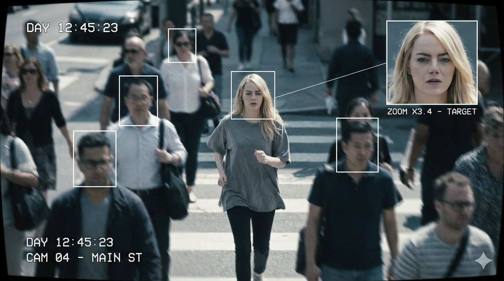
案例581: 城市监控画面中的名人肖像识别标记与放大焦点效果
以城市监控为背景的名人肖像生成提示，含AI人脸识别标记、放大焦点和低饱和冷色风格，呈现多位明星在繁忙街头的动态场景。
🎨 查看AI提示词
🇨🇳 中文提示词
艾玛·斯通 斯嘉丽·约翰逊 塞德尼·斯维尼 阿达·德·阿隆索 { "场景类型": "城市监控录像", "camera_setup": { "source": "固定式闭路电视摄像头", "angle": "向上倾斜的俯视角度", "view": "侧向俯视视角", "镜头效果": { "桶形畸变": "轻微", "运动模糊...
🇬🇧 English Prompt
Celebrities pictures Emma Stone Scarlett Johnson Sedney sweeney Ada de armas Google Gemini Nano Banana pro Google Gemini Nano 香蕉 pro Prompt :提示：{ "scene_type": "urban surveillance footage",...
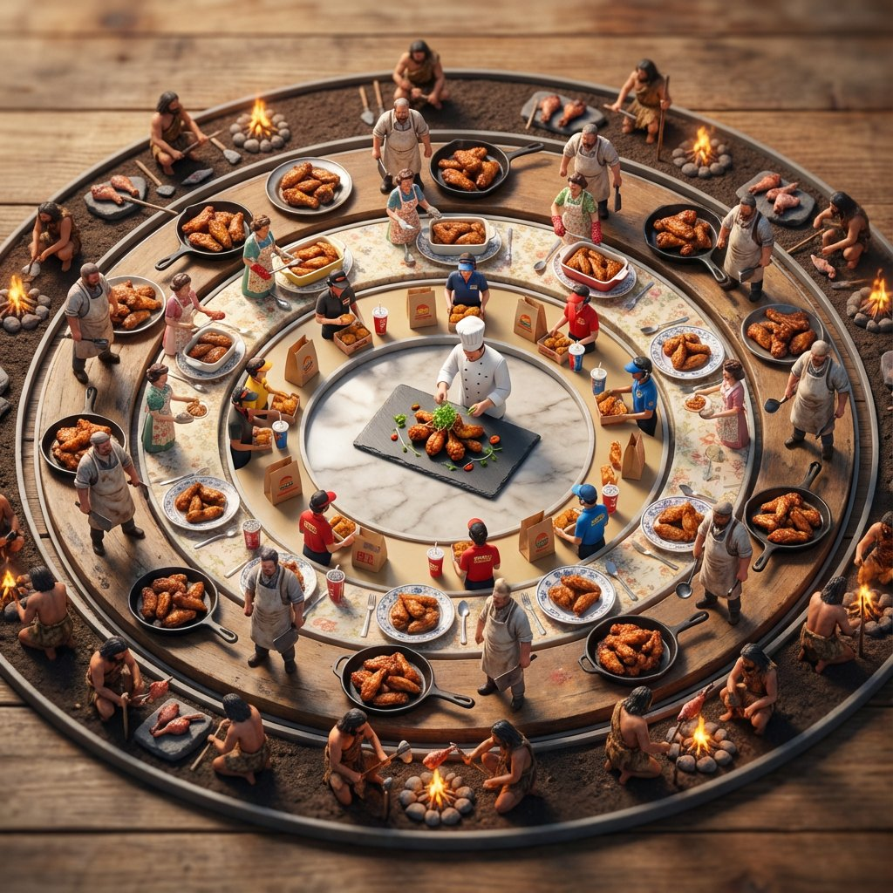
案例580: 用 Nano Banana Pro 可视化五时代食物历史微缩景观
以高角度微缩景观呈现辣鸡翅在五个时代的形态与工人造型，强调层级分布、背景质感与长影效果，输出为1:1、8K分辨率的单图。
🎨 查看AI提示词
🇨🇳 中文提示词
提示：为辣鸡翅做这个：输入变量：[插入食物]（例如，炸鸡、寿司、玉米卷、咖啡） 系统指令： 生成一个超逼真的、高角度的“食物历史微缩景观”，采用曼陀罗格式排列。 **严重警告：场景必须由 1:87 比例的微型人偶（厨师）填充，这些人偶需与每个戒指所代表的具体时代相对应。** **1. 时间线分析：** 分析输入食物的历史，以确定 5 个时代中工人的服饰和工具： 阶段 0（中心）：现代厨...
🇬🇧 English Prompt
Prompt: do this for spicy chicken wings: Input Variable: [INSERT FOOD] (e.g., Fried Chicken, Sushi, Tacos, Coffee) System Instruction: Generate a hyper-realistic, high-angle "Food History Diorama" a...
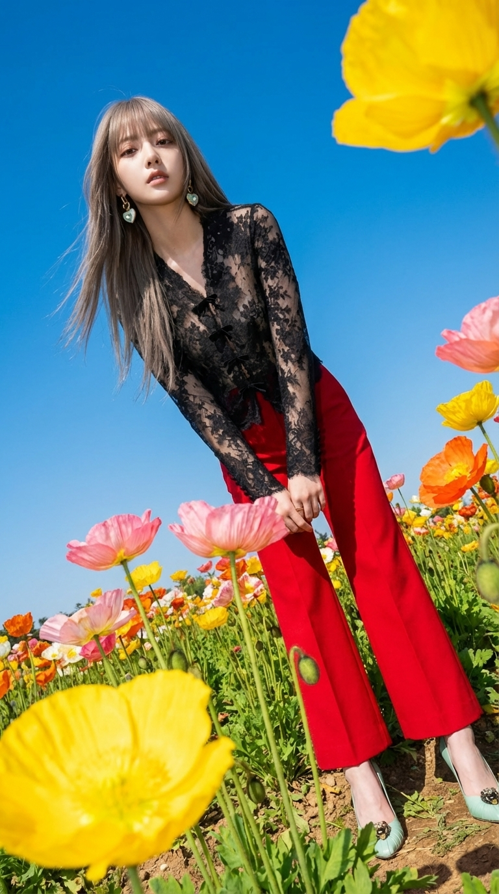
案例577: 花田户外时尚人像：在强光直闪下的高能花海场景
在花田背景下拍摄，使用强光直闪，突出服装与花朵的鲜艳对比，营造高能且俏皮的时尚氛围。低角度仰拍增强画面张力，带来活力和略带超现实的视觉冲击。
🎨 查看AI提示词
📝 提示词
This backdrop + my OOTD = Absolute perfection. The scenery understood the assignment! thx @ZaraIrahh ——————prompt Use this photo attached to create a striking outdoor fashion portrait set i...
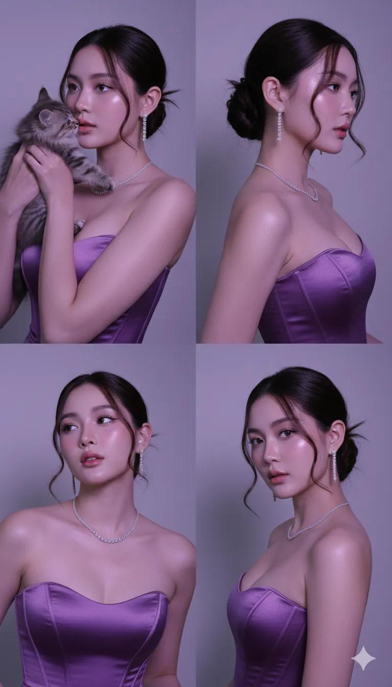
案例574: 寂静中的紫光瞬间：电影感优雅与身份锁定的四格拼贴
以寂静中的紫光照脸为起点，探讨优雅是否自足表达，并提供2×2网格超逼真拼贴的详细生成指令，强调身份锁定与统一造型带来的电影感视觉。
🎨 查看AI提示词
🇨🇳 中文提示词
{ “提示”：以 2×2 网格布局制作超逼真的四格照片拼贴画，营造电影般的低光美感。柔和的紫色和紫罗兰色环境光，细微的胶片颗粒感，以及纯色墙面背景。\n\n 身份锁定（绝对）：使用提供的参考照片中的同一张脸，确保所有四张照片中的身份完全一致。不得修改面部结构、比例、五官、表情、年龄、肤色、肤质或任何身份特征。参考脸在每一张照片中都必须保持 100%不变。\n\n 人物及造型（所有照片保持一致）：...
🇬🇧 English Prompt
Gemini Nano Banana { "prompt": "Ultra-realistic 4-frame photo collage in a 2×2 grid layout with a cinematic low-light aesthetic. Soft ambient purple and violet lighting, subtle film grain, and a p...
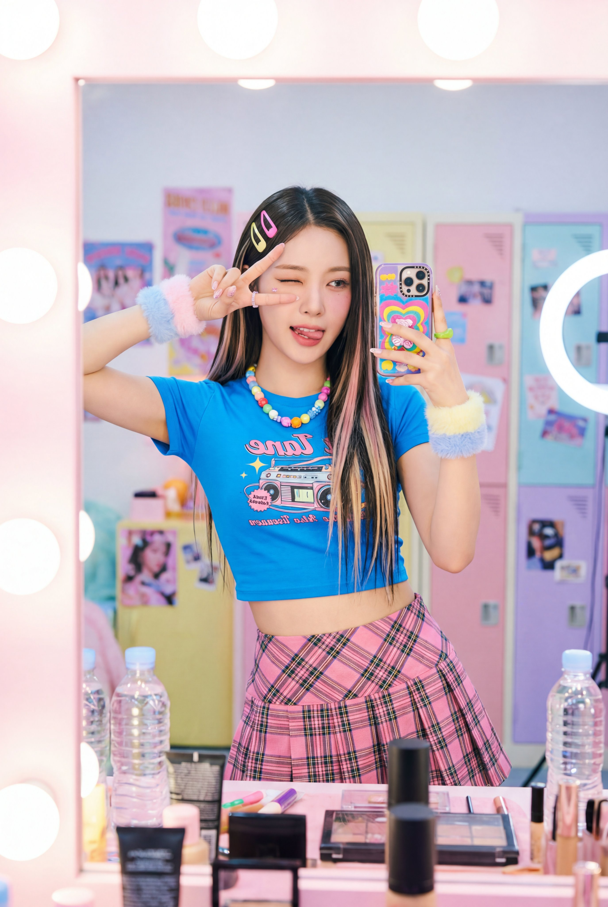
案例573: 8K镜像自拍：K-Pop偶像风格的高饱和活力后台场景
提供一份8K镜像自拍的生成提示，塑造韩国风格K-Pop偶像在后台更衣室的高饱和造型。通过柔和高调灯光、环灯光效与动态构图，突出面部与服装细节及俏皮眼神。
🎨 查看AI提示词
🇨🇳 中文提示词
版本： 2.0， "格式": "镜像自拍肖像", "target_resolution": "8K UHD", "style_preset": "K-Pop 偶像美学/Y2K 多彩风格" }, "subject_profile": { "生物识别"：{ “种族”: “韩国人” “体型”：“纤细、健美、匀称的韩国流行偶像身材”， "facial_id": "可爱性感，小脸，娃娃...
🇬🇧 English Prompt
{ "configuration": { "version": "2.0", "format": "Mirror-Selfie Portrait", "target_resolution": "8K UHD", "style_preset": "K-Pop Idol Aesthetic / Y2K Colorful" }, "subject...
案例572: 车内静谧奢华瞬间：高角度镜头下的优雅与自信
车内柔和灯光映照下，颈间珍珠与宁静神态相得益彰。高角度拍摄捕捉到装扮的微妙优雅与静谧奢华，展现时尚与简约的完美平衡。
🎨 查看AI提示词
🇨🇳 中文提示词
车内捕捉到的一个轻松自然的瞬间，每一个细节都在讲述一个故事。 从室内柔和的灯光到颈间精致的珍珠项链，宁静的神态展现出一种沉稳的自信。 从高处拍摄，相机置于上方，捕捉到了这身装扮的微妙优雅和此刻的静谧奢华。 时尚与简约的完美平衡。
🇬🇧 English Prompt
An effortless moment captured inside the car, where every detail tells a story. From the soft glow of the interior to the delicate pearls around the neck, the serene expression echoes the quiet co...
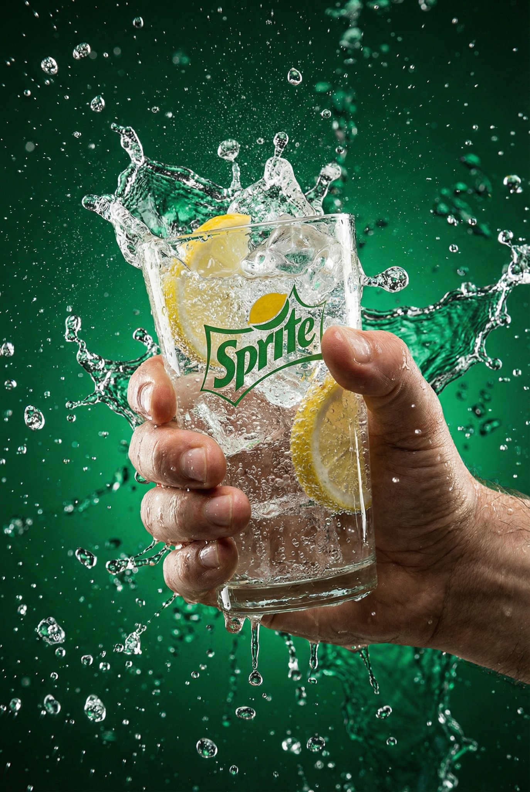
案例570: 极致冰镇可乐液体飞溅定格：高端商业摄影级水花瞬间
本推文描绘一只成人手握透明玻璃杯，冰镇可乐在高速拍摄下瞬间爆裂飞溅，强调真实水花、湿润质感和强烈对比，打造高端商业广告风格的强劲可乐视觉。
🎨 查看AI提示词
🇨🇳 中文提示词
{ “主题”： { “描述”：“一只人手紧握着一个装满冰镇碳酸可乐的透明玻璃杯，画面定格在液体飞溅的瞬间。” “年龄”: “成人” “表达”： { “总体而言”：“不可见” }, “脸”： { "preserve_original": true, “化妆”： “无” } }, “头发”： { “颜色”： “不可见”， "样式": "不可见", “效...
🇬🇧 English Prompt
"subject": { "description": "A human hand gripping a transparent glass filled with ice-cold carbonated cola, frozen at the moment of an explosive liquid splash", "age": "adult", "expres...
案例568: 雾镜中的温馨夜感自拍：暖光、羞怯微笑与圣诞氛围
9:16竖屏自拍，浴室雾镜与暖光营造温馨夜感。主角湿润高马尾、露肩圣诞袍，指尖抹雾，镜前绘有圣诞月亮，整体氛围亲密柔和。
🎨 查看AI提示词
🇨🇳 中文提示词
{ "image_type": "照片", “质量”: “普通” "aspect_ratio": "9:16", “方向”: “垂直”， "camera_style": "手机自拍", “场景”： { “环境”：“浴室镜子”， "mirror_state": "雾蒙蒙的", “蒸汽”：“可见的”， “灯光”： { 类型：暖顶灯， “强度”： “柔和”， “心情”：“温馨的...
🇬🇧 English Prompt
{ "image_type": "photo", "quality": "regular", "aspect_ratio": "9:16", "orientation": "vertical", "camera_style": "phone selfie", "scene": { "environment": "bathroom mirror", ...
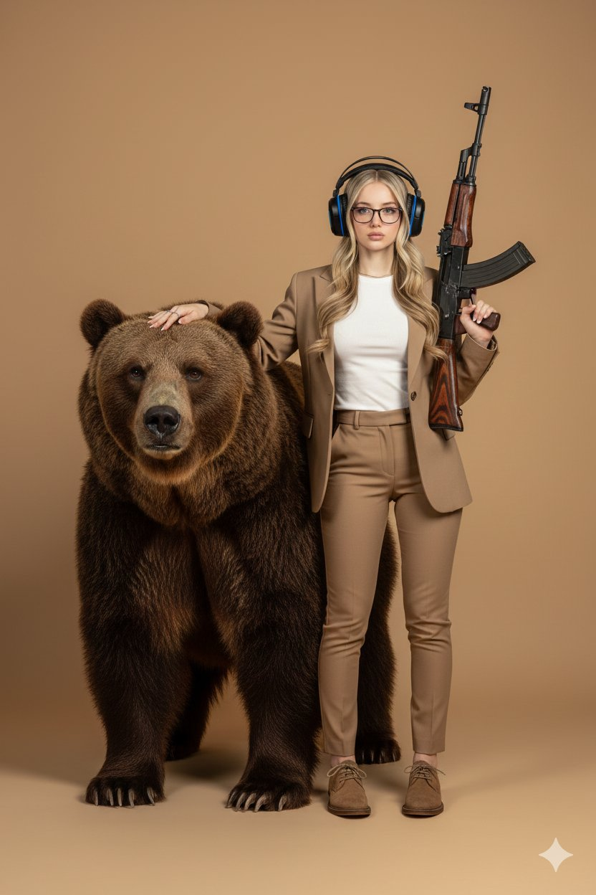
案例567: 荒诞奢华：高端肖像中的极简主义与力量表达
这组超现实风格的高端肖像展现了一位自信女性与灰熊的融合，结合极简背景、暖色调与电影级灯光，打造荒诞奢华的视觉冲击，彰显力量与时尚的融合。
🎨 查看AI提示词
🇨🇳 中文提示词
使用参考图像中的同一张脸，不要改变面部特征。 { "image_description": "一张高端超现实主义的影棚肖像照，照片中一位西部女性自信地站在一头巨大的灰熊旁边。" "subject_details": { “人”： { "性别": "女性", “年龄”： “20多岁”， “表情”：“平静、中立、直视”， “着装”：“单色棕褐色/米色修身西装，搭配同色圆领 T 恤和麂皮...
🇬🇧 English Prompt
Google Gemini Nano Banana pro 3.0Prompt { "image_description": "A high-end, surreal studio portrait of a western woman standing confidently next to a large grizzly bear.", "subject_details": { ...
案例564: 现代简约窗边场景创意绘制指南
本文介绍了如何在温馨的窗边场景中，通过柔和光线和散景效果，结合连续线条白色涂鸦，打造具有艺术感的现代风格照片背景。适合设计师和创意者参考使用。
🎨 查看AI提示词
🇨🇳 中文提示词
提示：创作一张温馨的窗边[场景]照片背景，柔和的阳光和温暖的散景效果营造出舒适的氛围。在背景上添加一个用连续线条绘制的白色[物体]涂鸦，并将其置于前景显眼位置。涂鸦应略带光泽，完美居中，并与画面融为一体，且无阴影。请使用简约、现代且富有艺术感的风格。
🇬🇧 English Prompt
Prompt: Create a realistic photo background of a cozy [SCENE] by a window with soft sunlight and warm bokeh blur. Add a clean white doodle of an [OBJECT] drawn in continuous line art style on top, pla...
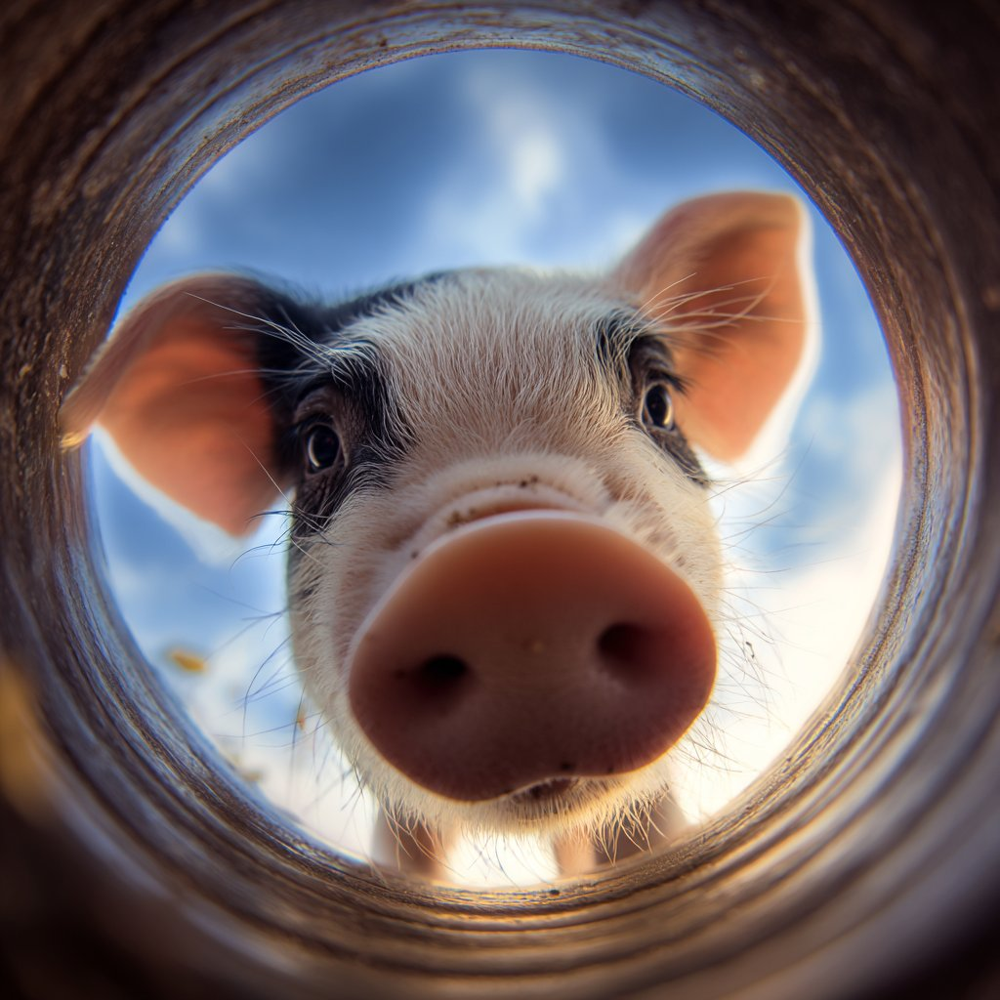
案例560: 极端视角下的可爱动物碗内摄影艺术
这是一张采用极端内视角拍摄的广告照片，镜头置于深碗底部，广角镜头捕捉到一只可爱动物探入碗中，鼻子特写且透视夸张，眼神灵动，画面明亮清晰，展现出极致的萌态与欢乐氛围。
🎨 查看AI提示词
🇨🇳 中文提示词
广告照片，采用极端视角，从深碗内部拍摄。相机放置在碗底，镜头向上。碗的内壁呈弧形环绕，从各个方向框住画面，碗的圆形边缘清晰可见，仿佛通向天空。一只极其可爱的小动物将头完全探入碗中，直视镜头。它的鼻子离镜头非常近，由于广角镜头的透视效果略微变形，看起来像是在嗅闻镜头。它的眼睛又大又灵动，与观众进行着眼神交流。广角镜头，f/1.4 光圈，极浅的景深，强烈的透视变形和透视缩短效果，夸张的鼻子尺寸，柔和明...
🇬🇧 English Prompt
Prompt Studio: Cuteness Overload Advertising photo, extreme POV from inside a deep food bowl. The camera is physically placed at the very bottom inside the bowl, facing upward. The interior walls o...
案例558: 用Gemini Nano Banana Pro打造极致写实圣诞女郎造型
本次作品利用Gemini Nano Banana Pro工具，生成一位穿着圣诞老人主题服装的女性形象，细节极为写实，呈现温暖梦幻的节日氛围。整体风格融合专业影棚摄影质感与柔和电影灯光，打造出浓郁且富有诱惑力的圣诞节视觉效果。
🎨 查看AI提示词
🇨🇳 中文提示词
{ "任务": "图像生成", "reference_image": "use_uploaded_reference_image", "identity_constraints": { "face_identity": "与参考图像 100%完全匹配", "no_facial_changes": true, "no_body_proportion_changes": true }, ...
🇬🇧 English Prompt
Try this Christmas Look using Gemini Nano Banana Pro 试试用 Gemini Nano Banana Pro 打造这款圣诞造型 { "task": "image_generation", "reference_image": "use_uploaded_reference_image", "identity_constrain...
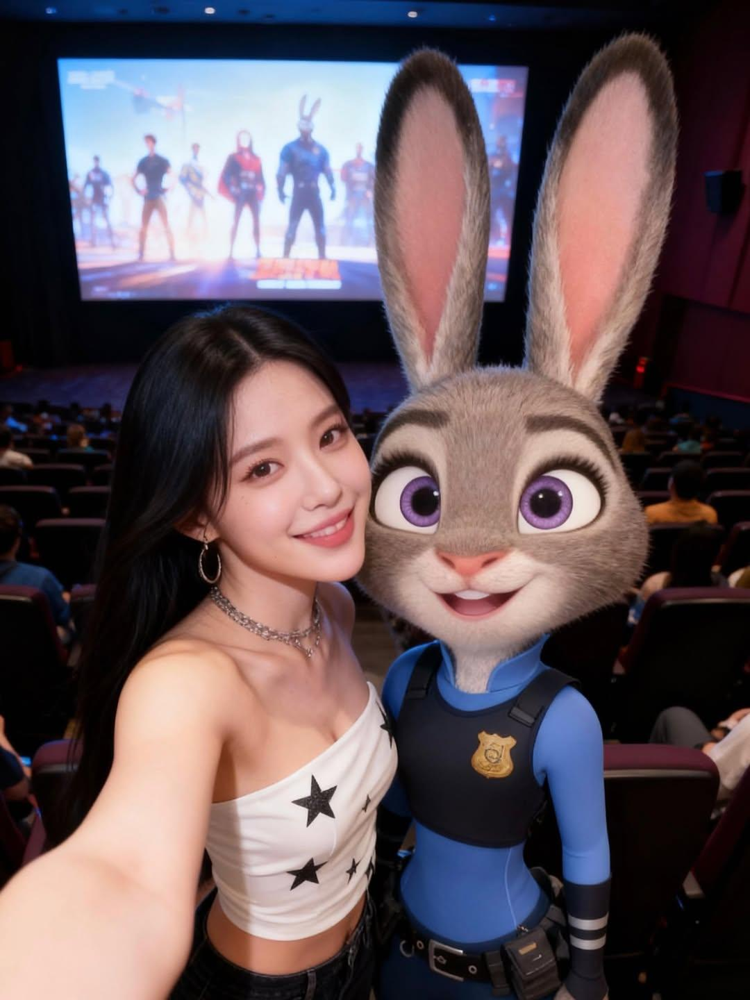
案例553: 自拍分享：与迪士尼警兔朱迪·霍普斯的温馨合影
一位韩国年轻女子Miyeon在昏暗的电影院中，与迪士尼角色朱迪·霍普斯并肩自拍，展现出趣味与温暖的互动，画面细节丰富，8K高品质呈现。
🎨 查看AI提示词
🇨🇳 中文提示词
和我的最爱的警兔自拍~ { “迅速的”： { “人物”： [ { "name": "Miyeon", 描述：一位美丽的年轻韩国女子，面带微笑，留着黑色长发，身穿白色无肩带上衣，上面点缀着黑色星星，佩戴银色项链。 }, { 姓名：朱迪·霍普斯 描述：迪士尼动画电影《疯狂动物城》中的角色，身穿警服，面带微笑。 } ], ...
🇬🇧 English Prompt
Selfie with my favorite cop bunny~ { "prompt": { "characters": [ { "name": "Miyeon", "description": "beautiful young Korean woman, smiling, long black hair, wearin...
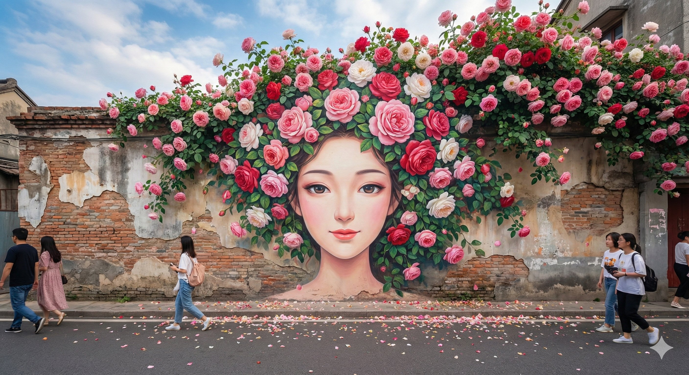
案例550: Nano Banana Pro创作“萝莲 Maiden”壁画，细节逼真如梦似幻
这幅由Nano Banana Pro创作的“萝莲 Maiden”壁画融合中式韵味和细腻的摄影质感，展现一位面容娇美的洋娃娃般女子，背景繁花似锦，场景如梦似幻，彰显其高超的数字艺术技巧。
🎨 查看AI提示词
🇨🇳 中文提示词
一幅超高清晰度、摄影质感极强的街头壁画，画面呈现强烈的中国风韵味。 画中描绘着一位绝美的卡通风女子正面特写头像，她神态柔美而宁静。墙体顶部被一大片盛开的蔷薇花覆盖，茂密的绿叶与繁盛的花朵向外舒展，部分枝条从墙顶垂落而下，与女子的头发巧妙融合，使她的秀发宛如由层层叠叠的蔷薇花组成。这些繁密的花朵簇拥着女子的头部，形成了一顶瑰丽的花冠，视觉效果华美浪漫。 背景中蓝天澄澈，点缀着朵朵白云；地...
🇬🇧 English Prompt
A street mural with ultra-high definition and an extremely strong photographic texture, the picture presenting a strong Chinese style charm. The painting depicts a close-up portrait of an exquisite...
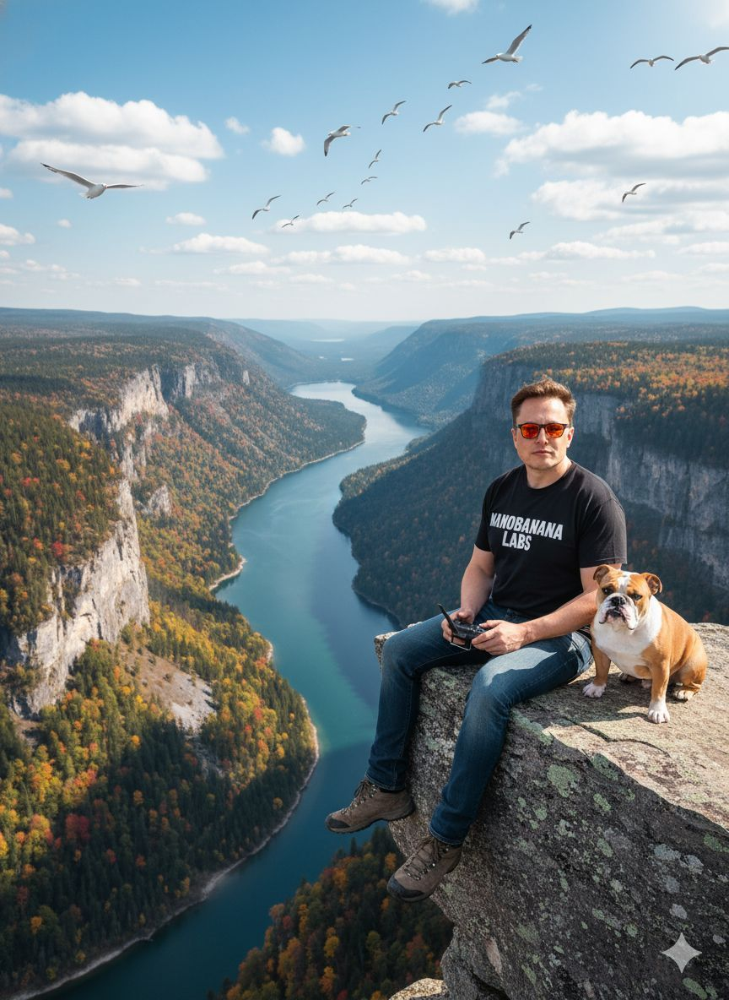
案例549: 与狗狗一起在悬崖边飞无人机的奇妙体验
想象一下，你和你的狗狗在悬崖边操控无人机，享受壮丽的自然风光。通过Gemini应用程序，你可以生成一幅超逼真的无人机航拍图像，捕捉这一刻的美好。只需简单几步，便可创建属于你自己的精致风景画面！
🎨 查看AI提示词
🇨🇳 中文提示词
生成一张超逼真的无人机航拍风景图，画面中一名男子（附图为参考照片，请 100%还原参考照片中的人物面部，拍摄全身照，无人机距离该男子十英尺）坐在悬崖边的岩架上。他身穿印有“NANO BANANA”（纳米香蕉）字样的黑色 T 恤、修身破洞牛仔裤，戴着橙色镜片的 Oakley 太阳镜。他双腿悬空于岩架边缘，神情平静地直视无人机，手中握着遥控器。他的英国斗牛犬坐在他身旁。无人机镜头还捕捉到了周围令人惊叹...
🇬🇧 English Prompt
2. Click create image and upload your photo 3. Copy and Paste the prompt below on "Describe your image" section 4. Click Generate button Generate a hyper-realistic landscape image o...
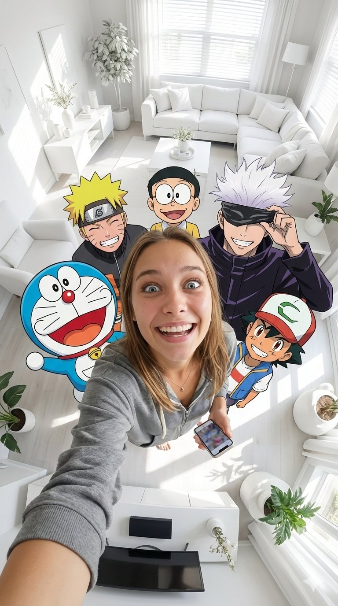
案例548: 极致真实感的动漫人物合影：鱼眼自拍创意呈现
这是一张9/16竖版鱼眼自拍，结合了哆啦A梦、鸣人等经典动漫角色，场景明亮、夸张表情与逼真光影融合，展现了创新的风格化写实主义效果。
🎨 查看AI提示词
🇨🇳 中文提示词
这是一张 9/16 竖版鱼眼自拍，照片中一位女性与[哆啦 A 梦、鸣人、大雄、五条悟、成镇（宝可梦中的小智）]合影，画面极具真实感。我们都咧嘴大笑，表情夸张滑稽。场景设定在一个明亮的小客厅，以白色为主色调。采用高角度拍摄，呈现极致的鱼眼畸变效果。逼真的电影级光影效果与风格化的写实主义完美融合，展现了动漫人物的独特魅力。
🇬🇧 English Prompt
> 9/16 vertical format fisheye selfie of an ultra-realistic woman from a photo with [Doraemon, Naruto, Nobita, Satoru Gojo, Sung Jin, who is Ash from Pokémon]. We’re all smiling with silly, exaggerate...
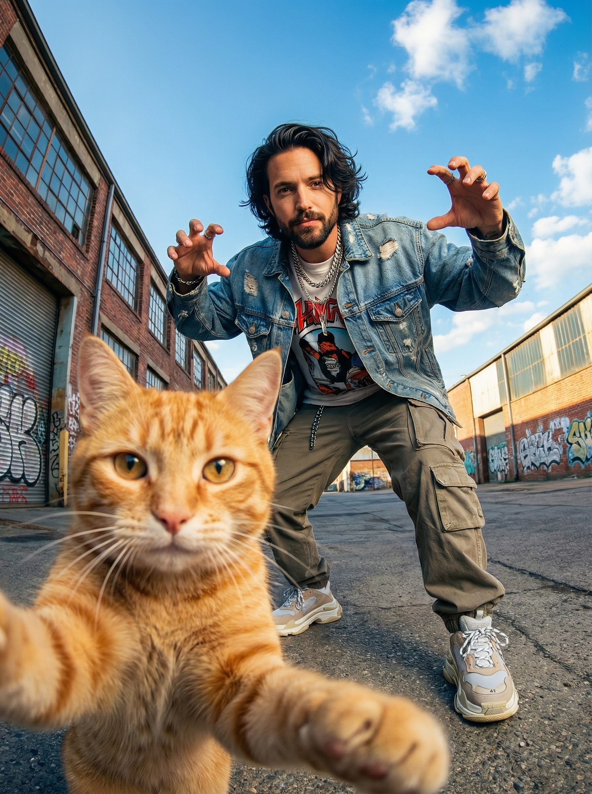
案例547: 一键生成街头潮流大片：AI助你打造酷炫自拍照
通过简单自拍，使用Gemini和Nano Banana Pro工具，即可创造逼真的街头风格大片，包括调皮猫咪和时尚男士，展现个性潮流态度。
🎨 查看AI提示词
🇨🇳 中文提示词
一只可爱的橘猫在前景中摆出超广角自拍的姿势，营造出夸张的透视效果，角度活泼动感。背景中，一位男士（请 100%还原参考图片中的人物面部）身着时尚嘻哈服饰，摆出充满活力的爪子姿势，展现街头潮流态度。服装细节包括：oversize 外套、印花 T 恤、宽松长裤、链条和现代运动鞋。场景设定在都市户外，工业建筑林立，蓝天白云，略带镜头畸变的视觉效果，色彩鲜艳，营造出时尚大片的氛围，并运用了电影级的灯光效果...
🇬🇧 English Prompt
A cute orange cat taking a dramatic ultra-wide selfie in the foreground, giant perspective effect, playful and dynamic angle. In the background, the man attached in the uploaded reference image ( Keep...
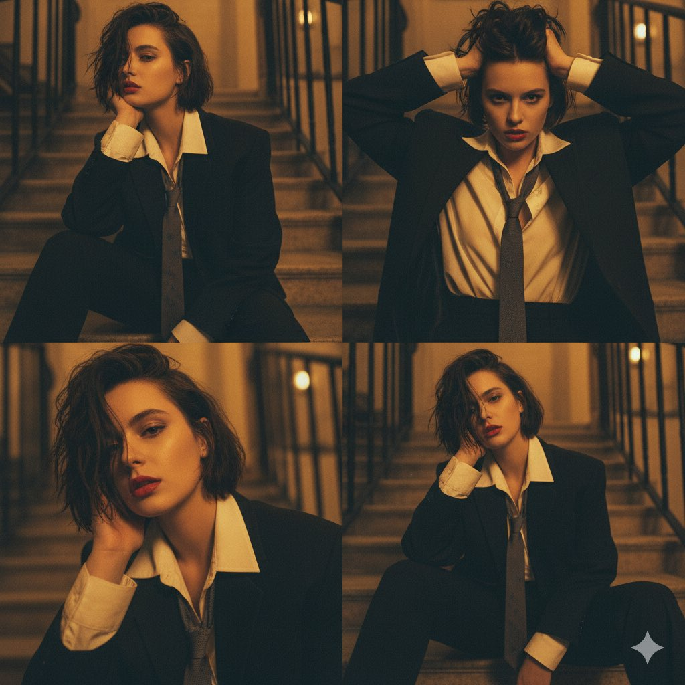
案例546: 电影感情绪拼贴：复古风格的中性时尚女性肖像
这组2x2拼贴展现一位身穿 oversized 西装、妆容 bold red lipstick 的年轻女性，环境设定在昏暗的旧楼梯间，营造出富有情绪和复古氛围的 cinematic 风格，强调丰富的光影与纹理细节。
🎨 查看AI提示词
🇨🇳 中文提示词
{ "image_description": { "overall_composition": "一幅情绪化的、电影感十足的 2x2 拼贴画，画中是同一位年轻女子", “主题”： { “外貌”： { “头发”：“短而蓬乱”， “妆容”：“大胆的红色唇膏”， “风格”：“引人注目的中性时尚大片造型” }, 着装：{ “西装”： “超大号黑色西装”， “衬衫”： “宽松的白色敞领...
🇬🇧 English Prompt
{ "image_description": { "overall_composition": "A moody, cinematic 2x2 collage featuring the same young woman", "subject": { "appearance": { "hair": "Short, tousled", ...
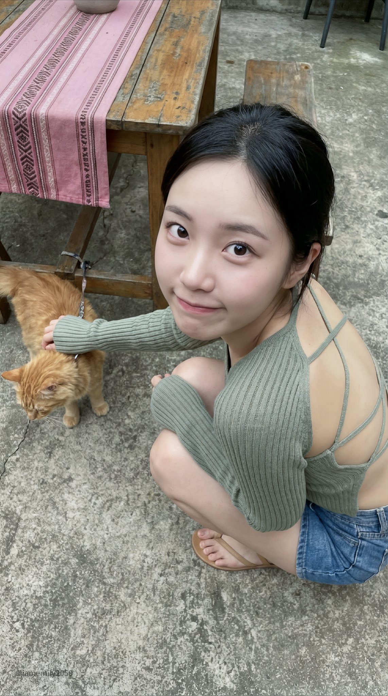
案例544: 青春俏皮：自然光下的可爱瞬间与猫咪互动
这是一张超写实生活方式摄影，展现一位年轻亚洲女性在乡村露天庭院中与橘猫互动的瞬间。她双膝深蹲，侧头回望镜头，展现羞涩又调皮的表情，搭配自然光线和细腻细节，彰显青春活力。
🎨 查看AI提示词
🇨🇳 中文提示词
标题：《坦率的魅力：俏皮的凝视》 “类别”: “超写实生活方式摄影” “基调”：“迷人、自然、青春、坦率” }, "prompt_elements": { “主题”： { 描述：一位年轻的亚洲女性，拥有可爱、柔和、圆润的脸型和白皙如瓷的肌肤。她的肤质自然水润，散发着柔和的光泽。 “面部细节”： “她有着一双醒目的大而深邃的圆眼睛，眼下有明显的卧蚕（迷人的眼窝），侧脸向上望着镜头，...
🇬🇧 English Prompt
"image_metadata": { "title": "Candid Charm: The Playful Gaze", "category": "Hyper-realistic Lifestyle Photography", "tone": "Charming, Raw, Youthful, Candid" }, "prompt_elements":...
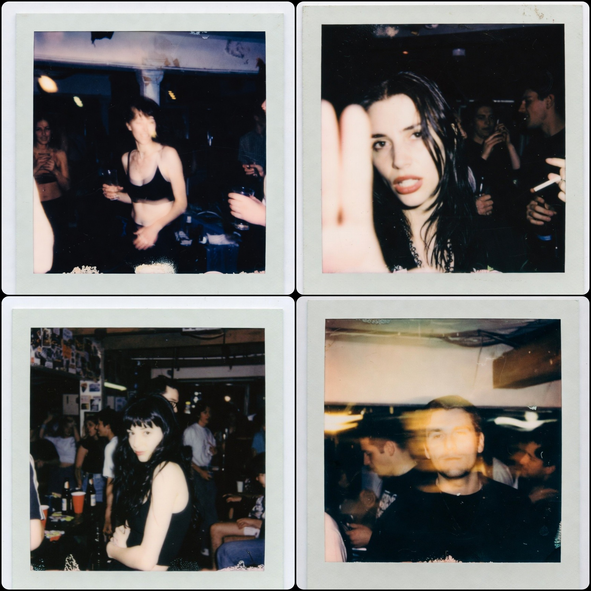
案例543: Grok Imagine被90年代宝丽来氛围彻底吸引
这条推文展示了Grok Imagine对一组模仿90年代宝丽来风格的低光聚会照片的热情，强调其真实、复古的视觉效果。图片包含模糊、颗粒感和糟糕构图，完美还原真实快照的氛围。
🎨 查看AI提示词
🇨🇳 中文提示词
1:1 宽高比，一张 90 年代末的宝丽来照片。照片中的主角 [SUBJECT] 出现在一个随意、略显不完美的瞬间。背景是一间脏乱的房屋地下室，后面有人正在聚会。这张照片具有典型的低光宝丽来摄影风格，动态模糊、刺眼的闪光、颗粒感以及糟糕的构图，这些都是真实聚会快照的典型特征。
🇬🇧 English Prompt
1:1 aspect ratio, a Polaroid from the late 90s. The main character [SUBJECT] appears in the photo, caught in a casual, imperfect moment. The background shows a dirty house basement with people partyin...
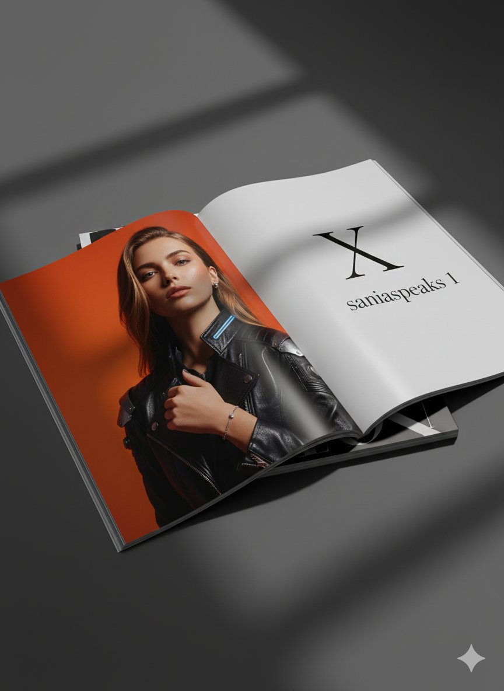
案例541: Google AI Studio Gemini 2.5 Pro打造超逼真高端时尚杂志风格图片
本文介绍了利用Google AI工作室Gemini（纳米香蕉）2.5 Pro，通过详细提示生成高分辨率、超逼真风格的时尚杂志照片，包括人物造型、背景效果和排版布局，展现AI在高端视觉创作中的应用潜力。
🎨 查看AI提示词
🇨🇳 中文提示词
{ "image_style": "超逼真 8K 高清高分辨率照片", “作品”： { 对象： '打开时尚杂志' “放置方式”：“躺在深灰色表面上”， “视角”：“从上方斜角拍摄（俯视特写）” “效果”：[ “柔光箱的微妙反射” “杂志下方逼真的阴影” ], "magazine_details": { “纹理”：“逼真的光面纸张反射和精细的纸张纹理”， “形状”：“略微弯曲...
🇬🇧 English Prompt
"image_style": "Hyper-realistic 8K HD high-resolution photo", "composition": { "object": "Open fashion magazine", "placement": "Lying on a dark gray surface", "perspective": "Shot di...
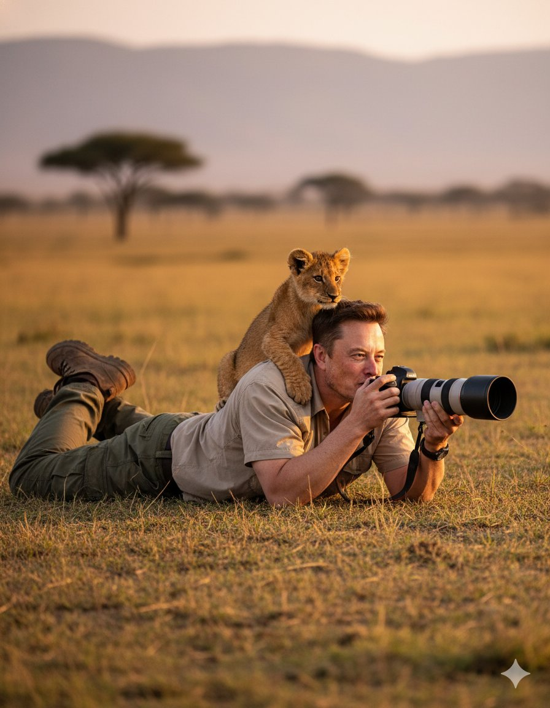
案例540: AI生成超写实野生动物探险照片，打造你的专属野生旅程
这篇推文介绍如何使用Gemini应用，通过上传个人照片并应用AI提示，生成逼真的野生动物摄影场景，结合名人元素，打造个性化的野生探险体验。
🎨 查看AI提示词
🇨🇳 中文提示词
超写实的野生动物摄影场景，(使用上传照片中的参考面部)。一位穿着专业野生动物探险服装的男人——浅棕色户外衬衫、耐磨工装裤和结实的野外靴。他平躺在草地上，手持专业单反相机，装着大型远摄镜头，专注于野生动物。在他肩上坐着一只好玩的小狮子，望向远方。黄金时刻的自然光线，非洲草原背景，电影般的景深效果，8K 细节，鲜艳的色彩。保持我的面部 100%准确。高清质量单反相机。
🇬🇧 English Prompt
Ultra-realistic wildlife photography scene, (use reference face from uploaded photo). A man wearing proper wildlife-safari clothing — light brown outdoor shirt, rugged cargo pants, and sturdy field bo...
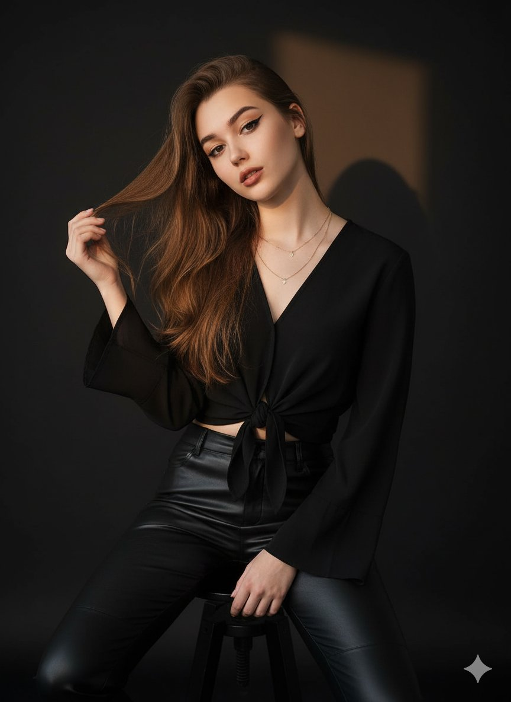
案例536: 高端时尚人像摄影：低调戏剧光线与极简背景的完美结合
这组摄影作品展现了一位自信时尚的女性形象，通过黑色极简背景、戏剧性光线和细腻的细节打造出高分辨率的专业肖像，强调自信与现代感。
🎨 查看AI提示词
🇨🇳 中文提示词
{ "subject": { "figure": "一位自信且时尚的女性形象，中景拍摄。（面部特征、头发和风格应与提供的用户参考图像保持一致。）", "pose": "站姿挺直，一只手不显眼地放在裤袋里。面部和视线直接且正面。", "attire": { "top": "黑色，轻便的 V 领上衣，腰间系带露出一小部分腹部。上衣有长长的宽松袖子或喇叭袖口。", ...
🇬🇧 English Prompt
"subject": { "figure": "A confident and stylish female figure, medium-long shot. (Facial features, hair, and style should match the provided user's reference image for fidelity.)", "pose": "...
案例535: 雨夜中的超写实蜘蛛侠与女性亲密瞬间
这组超写实风格的图像展现了在雨夜城市中，蜘蛛侠倒挂与一位湿润的女性亲密互动的场景，细节丰富，光影戏剧化，呈现出极致的摄影质感。
🎨 查看AI提示词
🇨🇳 中文提示词
"类型": "图像生成", "风格": "超写实照片", "艺术风格": [ "照片级真实感", "HDR 色调平衡", "奢华写实" ], "主题": [ { "description": "女人", "参考图像": "用户提供的照片", "面部特征": "不要修改", "外貌": { ...
🇬🇧 English Prompt
"type": "image_generation", "style": "hyper-realistic photograph", "artistic_style": [ "photorealism", "HDR tone balance", "luxury realism" ], "subjects": [ ...
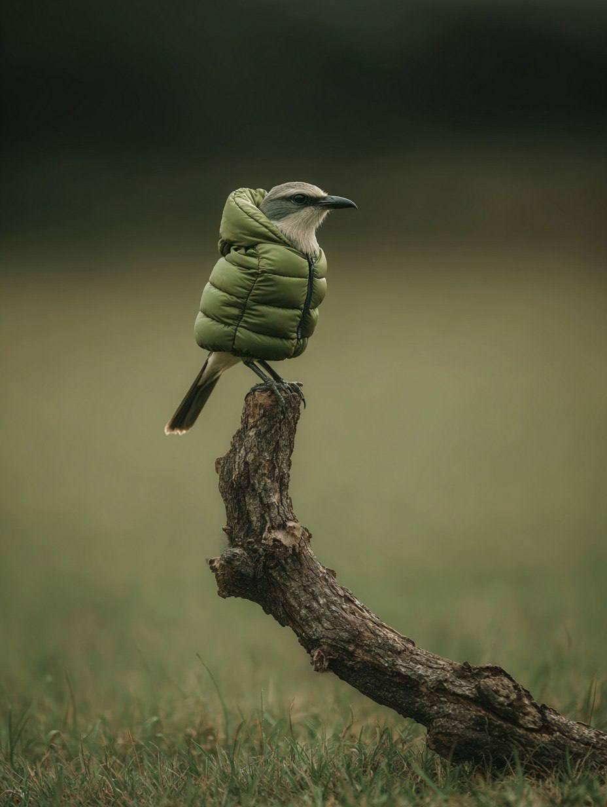
案例533: 穿着充气羽绒服的鸟儿：自然风光中的趣味瞬间
这幅真实摄影风格的图片展现了一只穿着彩色充气羽绒服的鸟儿栖息在干枯树枝上，背景为模糊的绿色草原，融合了创意与自然美感，令人感受到奇趣的鸟类瞬间。
🎨 查看AI提示词
🇨🇳 中文提示词
一只穿着充气[颜色]羽绒服的鸟儿，栖息在干枯的树枝顶端。背景是模糊的绿色草原，采用自然光效的真实摄影风格。
🇬🇧 English Prompt
A bird wearing an inflatable [COLOR] down jacket perched on the top of a dry tree branch. the background is a blurred green grassland, in the style of real photography with natural lighting.当你的滴答声比空气轻
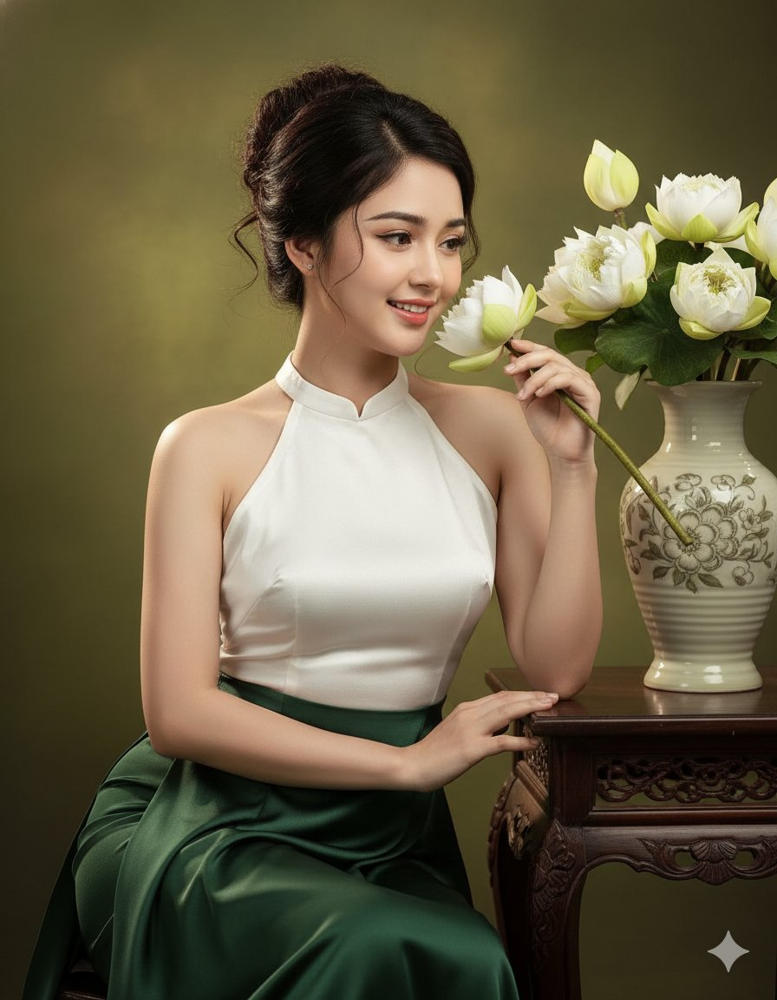
案例531: 超现实越南女性白莲肖像，静谧优雅的艺术表达
这是一幅8K超真实肖像，描绘一位身穿传统丝绸服饰的越南年轻女性，手持白莲花，神态宁静梦幻。背景采用渐变橄榄绿，细节精致，表现出极高的艺术品质。
🎨 查看AI提示词
🇨🇳 中文提示词
创建上传人物的超逼真面部（保留精确的真实面部和身体身份，不进行任何改动）8K 高分辨率超现实肖像，描绘一位年轻、优雅的越南女性，她身穿传统的白色丝绸 yếm，搭配一条长长的飘逸暗绿色裙子。她略微倾斜坐着，右手拿着一朵新鲜的白莲花靠近右脸颊，肘部优雅弯曲。左手轻轻放在大腿上。她的头略微朝向莲花，眼睛凝视着花朵，带着宁静、梦幻般的神情和精致的笑容。她的黑发梳成高高的波浪发髻，几缕发丝围绕着她白皙、容光...
🇬🇧 English Prompt
1. Open Gemini Nano-Banana 2. Upload Your Image 3. Paste this Prompt and make it yoursPrompt 提示Create A hyper-realistic face of the uploaded person (preserve exact real face and body identity, no al...
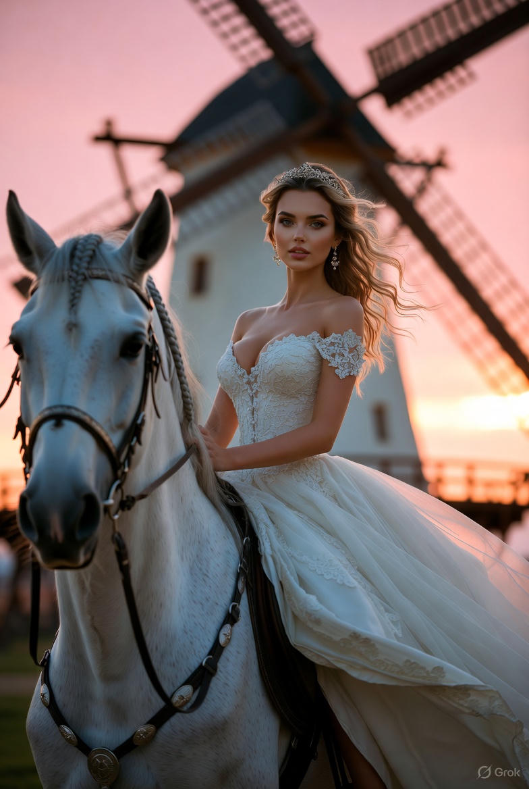
案例529: 超逼真风格女性骑马肖像：白色礼服与风车夕阳场景
这是一幅以超逼真风格呈现的女性骑马肖像，背景设于日落时分的传统风车旁，融合戏剧性光影与高动态范围，展现庄严而永恒的氛围，采用索尼a7RV与85mm镜头精心捕捉细节。
🎨 查看AI提示词
🇨🇳 中文提示词
"提示": { "type": "竖屏", "subject": { "description": "一位女性", "attire": "经典白色奢华礼服", "pose": "强大而优雅" }, "animal": "白马", "action": "女人骑马" "设置": {...
🇬🇧 English Prompt
"image_prompts": [ { "prompt": { "type": "portrait", "subject": { "description": "A woman", "attire": "classic white luxury gown", "pose"...
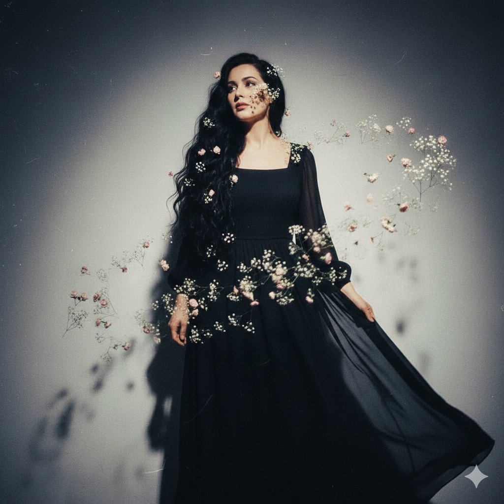
案例528: 复古电影风格黑色长裙少女艺术照
一幅充满复古颗粒感的明亮图像，女孩身穿Pinterest风格的黑色长款乔其纱连衣裙，长发飘逸，花朵点缀，营造神秘浪漫的艺术氛围，犹如好莱坞电影场景。
🎨 查看AI提示词
🇨🇳 中文提示词
创建一张参考图片的复古颗粒感但明亮图像，披着完美的黑色长款 Pinterest 风格美学印花乔其纱连衣裙，方领设计。它必须像好莱坞电影一样，非常长的飘逸头发垂到我的腰际，小花朵别在卷曲的发丝中，充满风情的浪漫氛围。女孩站在实心墙前，微微向左侧上方看去，空中飘落着一些花朵，深色阴影和对比戏剧性，营造出神秘而艺术化的氛围。
🇬🇧 English Prompt
Create a vintage grainy but bright image of the reference picture but draped in a perfect long black color Pinteresty aesthetic summary georgette dress with square neckline. It must feel like a hollyw...
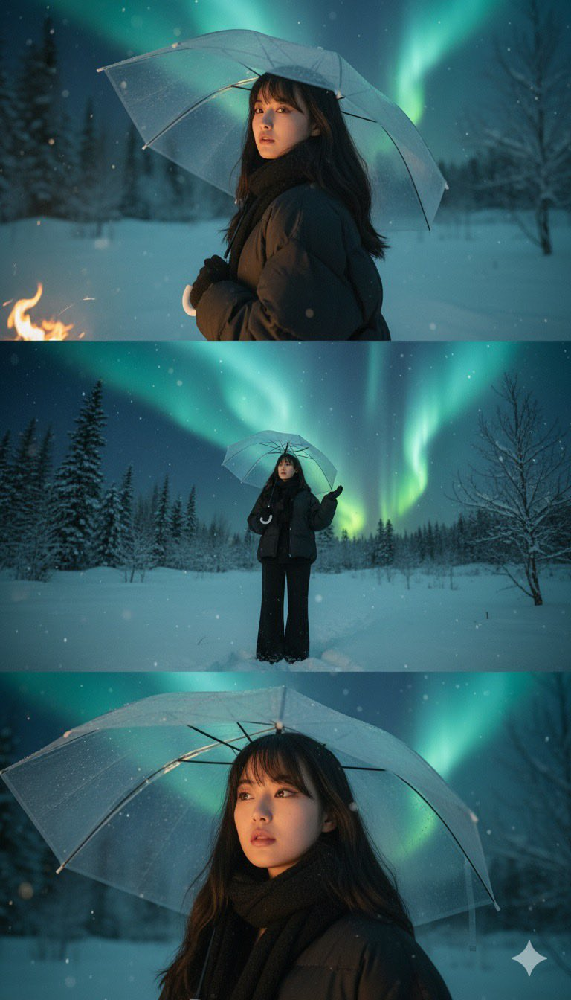
案例524: 极光雪景下的忧郁少女三联画：超写实数字艺术呈现
这是一幅4K超写实数字三联画，表现孤独少女在雪原中的静谧与忧郁，通过细腻的光影和极光背景展现深邃情感，强调面部保持高度一致的视觉效果。
🎨 查看AI提示词
🇨🇳 中文提示词
提示词：2160x3840 像素 （4K） 超写实数码照片杰作三联画。该图像是一块垂直画布，分为三个相等的水平面板。主角的脸必须与参考照片 100% 相同，是一位年轻女子，长发飘逸，表情扁平、怀旧，拥有深邃而聪明的眼睛。她的穿搭是宽松的冬季黑色羽绒服套装，搭配宽腿裤和黑色围巾。整体情绪是忧郁和孤独的，背景是白雪覆盖的白色景观和柔和的调色板。 面板 1（人像镜头）：手持透明雨伞的角色，静静地回头看...
🇬🇧 English Prompt
Prompt: A 2160x3840 pixel (4K) Ultra-Realistic Digital Photo Masterpiece Triptych. The image is a vertical canvas divided into three equal horizontal panels. The main subject, whose face must be 100% ...
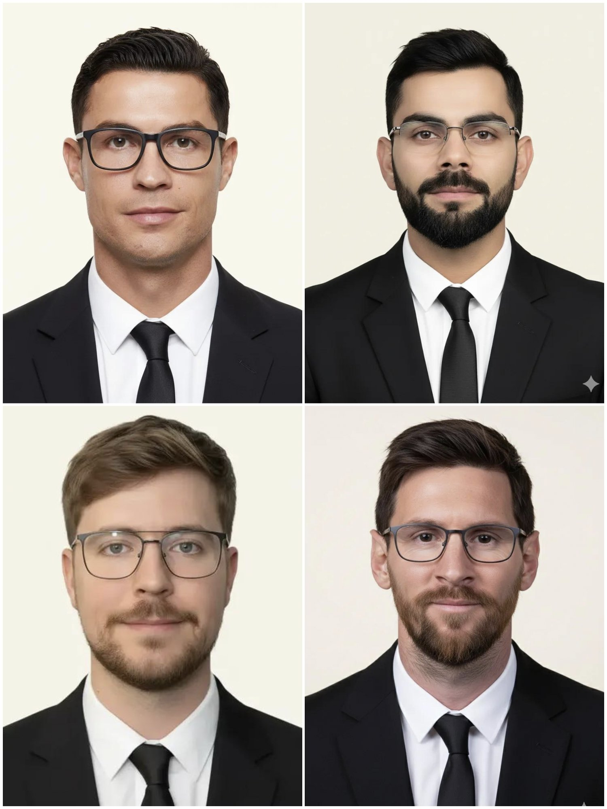
案例522: 利用Gemini AI制作高逼真护照照片，轻松定制个人官方证件照
本文介绍如何通过Gemini AI生成超逼真的护照尺寸照片，确保面部高度相似、专业风格，适用于身份证或护照，操作简便效果自然。首先要上传一张你的照片。
🎨 查看AI提示词
🇨🇳 中文提示词
超逼真的护照尺寸照片（与我的面部完全相似，100% 匹配，无面部变化）.“， ”style“： ”适合官方身份证或护照使用的专业工作室肖像。“， ”outfit“： ”黑色休闲西装和白色领衬衫和配套领带，搭配品牌现代眼镜“， ”expression“： ”中性闭唇微笑，笔直的眼神，双耳可见，包括肩膀。“ lighting”： “均匀平衡的正面照明， 没有刺眼的阴影，柔和的工作室色调。“， ”bac...
🇬🇧 English Prompt
Ultra-realistic passport-size photo of me (exact face likeness, 100% match, no facial changes).", "style": "Professional studio portrait suitable for official ID or passport use.", "outfit": "black ca...
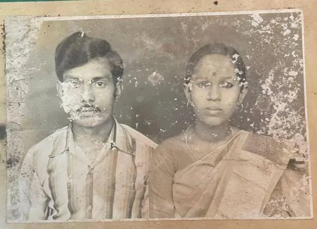
案例520: 专业旧照片修复：用Google Gemini AI让照片焕发新生
这是一项基于Google Gemini AI的专业照片修复服务，能够将老照片编辑成1080x1920像素，赋予现代美感，增强色彩和真实感。非免费AI滤镜，需私信咨询套餐详情。
🎨 查看AI提示词
🇨🇳 中文提示词
使用 Google Gemini Ai 提示 请将我的旧照片编辑成 1080 x 1920 像素，具有美观和现代的摄影外观，使其看起来真实并增强色彩。
🇬🇧 English Prompt
Use Google Gemini Ai PROMPT Please edit my old photo into 1080 x 1920 pixels, with an aesthetic and modern photography look, making it appear authentic and enhancing the colors.